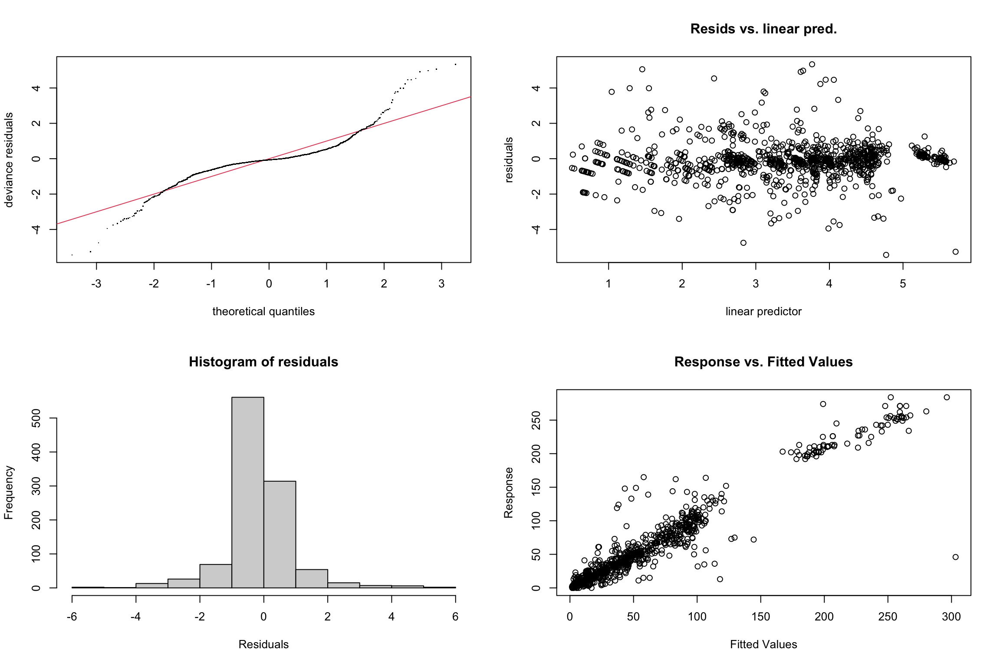

Defensible Wind Analysis: Testing Effects on Monarch Abundance
Author
Kyle Nessen
Published
August 12, 2025
Objective
Test whether wind speed affects monarch butterfly abundance at overwintering sites using a defensible analytical approach. This analysis directly tests Leong’s (2016) hypothesis that wind > 2 m/s disrupts monarch clusters.
Create Analysis Dataset with Multiple Temporal Lags
Code
# Sample butterfly data to make processing feasible while maintaining temporal structureset.seed(42)butterfly_sample <- butterfly_clean %>%group_by(deployment_id) %>%# Sample more observations per deployment for robust temporal analysisslice_sample(n =300) %>%ungroup() %>%arrange(deployment_id, datetime)print(paste("Sampled butterfly data:", nrow(butterfly_sample)))
[1] "Sampled butterfly data: 2614"
Code
# Create the analysis dataset with comprehensive temporal lagsanalysis_data <- butterfly_sample %>%# Add wind statisticsrowwise() %>%mutate(# Primary wind metrics (30-min window)wind_stats =list(get_enhanced_wind_stats(wind_meter_name, datetime, wind_clean, 30)),# 2-hour cumulative exposurewind_2hr =list(get_cumulative_wind(wind_meter_name, datetime, wind_clean, 2)) ) %>%unnest_wider(wind_stats) %>%unnest_wider(wind_2hr, names_sep ="_") %>%ungroup() %>%# Add temperature (closest match within 1 hour)left_join(temp_clean, by =c("deployment_id", "datetime")) %>%# Calculate comprehensive temporal lagsarrange(deployment_id, datetime) %>%group_by(deployment_id) %>%mutate(# Multiple abundance lagsabundance_lag_30min =lag(total_butterflies, 1),abundance_lag_1hr =lag(total_butterflies, 2), # Assuming 30-min intervalsabundance_lag_2hr =lag(total_butterflies, 4),abundance_lag_4hr =lag(total_butterflies, 8),abundance_lag_24hr =lag(total_butterflies, 48), # Yesterday same time# Time differences to verify lag assumptionstime_diff_30min =as.numeric(datetime -lag(datetime, 1), units ="mins"),time_diff_1hr =as.numeric(datetime -lag(datetime, 2), units ="mins"),time_diff_2hr =as.numeric(datetime -lag(datetime, 4), units ="mins"),time_diff_4hr =as.numeric(datetime -lag(datetime, 8), units ="mins"),time_diff_24hr =as.numeric(datetime -lag(datetime, 48), units ="hours"),# Calculate abundance changesabundance_change_30min = total_butterflies - abundance_lag_30min,abundance_change_1hr = total_butterflies - abundance_lag_1hr,abundance_change_24hr = total_butterflies - abundance_lag_24hr,# Calculate time since first observation (proxy for sunrise)minutes_since_first =as.numeric(datetime -first(datetime), units ="mins") ) %>%ungroup() %>%# Apply defensible filtering: remove only consecutive zerosfilter(!is.na(mean_wind),!is.na(temperature), n_wind_obs >=3,# Critical filter: remove only periods where both current and previous are zero!(total_butterflies ==0& abundance_lag_30min ==0),# Ensure reasonable time gaps (allowing for some missing data) time_diff_30min <=60|is.na(time_diff_30min) ) %>%# Create derived variablesmutate(log_abundance =log(total_butterflies +1),log_abundance_lag_30min =log(abundance_lag_30min +1),log_abundance_lag_1hr =log(abundance_lag_1hr +1),log_abundance_lag_4hr =log(abundance_lag_4hr +1),log_abundance_lag_24hr =log(abundance_lag_24hr +1),hour_of_day =hour(datetime),sunlight_prop =ifelse(total_butterflies >0, butterflies_direct_sun / total_butterflies, 0),view_id =factor(view_id),deployment_id =factor(deployment_id),# Binary indicators for threshold testingwind_above_2ms =as.numeric(mean_wind >2),wind_above_3ms =as.numeric(mean_wind >3) )print(paste("Final analysis dataset:", nrow(analysis_data), "observations"))
# Wind metrics distributionsp1 <-ggplot(analysis_data, aes(x = mean_wind)) +geom_histogram(bins =30, alpha =0.7, fill ="steelblue") +geom_vline(xintercept =2, color ="red", linetype ="dashed", size =1) +labs(title ="Distribution of Mean Wind Speed", x ="Mean Wind Speed (m/s)", y ="Count",subtitle ="Red line: 2 m/s threshold from Leong (2016)")p2 <-ggplot(analysis_data, aes(x = wind_sd)) +geom_histogram(bins =30, alpha =0.7, fill ="darkgreen") +labs(title ="Distribution of Wind Variability", x ="Wind Standard Deviation (m/s)", y ="Count")p3 <-ggplot(analysis_data, aes(x = minutes_above_2ms)) +geom_histogram(bins =20, alpha =0.7, fill ="orange") +labs(title ="Minutes Above 2 m/s per 30-min Window", x ="Minutes", y ="Count")p4 <-ggplot(analysis_data, aes(x = gust_factor)) +geom_histogram(bins =30, alpha =0.7, fill ="purple") +labs(title ="Gust Factor (Max/Mean Wind)", x ="Gust Factor", y ="Count")print(p1)
Code
print(p2)
Code
print(p3)
Code
print(p4)
Code
# Abundance distribution and temporal patternsp1 <-ggplot(analysis_data, aes(x = total_butterflies)) +geom_histogram(bins =50, alpha =0.7, fill ="goldenrod") +scale_x_log10() +labs(title ="Distribution of Butterfly Abundance", x ="Total Butterflies (log scale)", y ="Count")p2 <-ggplot(analysis_data, aes(x = minutes_since_first, y = total_butterflies)) +geom_point(alpha =0.5, aes(color =factor(view_id))) +scale_y_log10() +geom_smooth(method ="gam", se =TRUE, color ="black") +labs(title ="Abundance vs Time Since First Observation", x ="Minutes Since First Observation", y ="Total Butterflies (log scale)",color ="View ID") +theme(legend.position ="bottom")print(p1)
Code
print(p2)
Primary Wind-Abundance Relationships
Code
# Core wind-abundance relationshipsp1 <-ggplot(analysis_data, aes(x = mean_wind, y = total_butterflies)) +geom_point(alpha =0.6, aes(color =factor(view_id))) +scale_y_log10() +geom_smooth(method ="gam", se =TRUE, color ="black", size =1.2) +geom_vline(xintercept =2, color ="red", linetype ="dashed", alpha =0.8) +labs(title ="Mean Wind Speed vs Butterfly Abundance",x ="Mean Wind Speed (m/s)", y ="Total Butterflies (log scale)",color ="View ID",subtitle ="Red line: 2 m/s threshold from Leong (2016)") +theme(legend.position ="bottom")p2 <-ggplot(analysis_data, aes(x = wind_sd, y = total_butterflies)) +geom_point(alpha =0.6, aes(color =factor(view_id))) +scale_y_log10() +geom_smooth(method ="gam", se =TRUE, color ="black", size =1.2) +labs(title ="Wind Variability vs Butterfly Abundance",x ="Wind Standard Deviation (m/s)", y ="Total Butterflies (log scale)",color ="View ID") +theme(legend.position ="bottom")p3 <-ggplot(analysis_data, aes(x = minutes_above_2ms, y = total_butterflies)) +geom_point(alpha =0.6, aes(color =factor(view_id))) +scale_y_log10() +geom_smooth(method ="gam", se =TRUE, color ="black", size =1.2) +labs(title ="Minutes Above 2 m/s vs Butterfly Abundance",x ="Minutes Above 2 m/s (per 30-min window)", y ="Total Butterflies (log scale)",color ="View ID") +theme(legend.position ="bottom")print(p1)
Code
print(p2)
Code
print(p3)
Code
# Check temporal autocorrelation structurelag_cors <- analysis_data %>%filter(!is.na(abundance_lag_30min), !is.na(abundance_lag_1hr), !is.na(abundance_lag_24hr)) %>%summarise(cor_30min =cor(total_butterflies, abundance_lag_30min, use ="complete.obs"),cor_1hr =cor(total_butterflies, abundance_lag_1hr, use ="complete.obs"),cor_4hr =cor(total_butterflies, abundance_lag_4hr, use ="complete.obs"),cor_24hr =cor(total_butterflies, abundance_lag_24hr, use ="complete.obs") )kable(lag_cors, caption ="Temporal Autocorrelation at Different Lags", digits =3)
Temporal Autocorrelation at Different Lags
cor_30min
cor_1hr
cor_4hr
cor_24hr
0.957
0.925
0.813
0.538
Primary GAM Models
Model 1: Enhanced Wind Metrics
Code
# Primary model with enhanced wind metricsgam_enhanced <-gam( total_butterflies ~# Temporal autocorrelation controlss(log_abundance_lag_30min, k =10) +s(log_abundance_lag_24hr, k =8) +# Yesterday baseline for site patterns# Primary wind predictorss(mean_wind, k =8) +s(wind_sd, k =6) +s(minutes_above_2ms, k =6) +# Environmental controlss(temperature, k =8) +s(sunlight_prop, k =6) +s(minutes_since_first, k =8, bs ="cc") +# Cyclic for daily pattern# Site effectss(view_id, bs ="re"),family =nb(),data = analysis_data,method ="REML",select =TRUE# Allows terms to be penalized to zero if not needed)summary(gam_enhanced)
# Test different temporal lag combinationsgam_multi_lag <-gam( total_butterflies ~# Multiple temporal scaless(log_abundance_lag_30min, k =8) +s(log_abundance_lag_1hr, k =6) +s(log_abundance_lag_4hr, k =6) +# Wind effectss(mean_wind, k =8) +s(wind_sd, k =6) +# Environmental controlss(temperature, k =8) +s(sunlight_prop, k =6) +s(minutes_since_first, k =8, bs ="cc") +# Site effectss(view_id, bs ="re"),family =nb(),data = analysis_data,method ="REML",select =TRUE)summary(gam_multi_lag)
# Test wind-environment interactionsgam_interact <-gam( total_butterflies ~# Temporal controlss(log_abundance_lag_30min, k =10) +s(log_abundance_lag_24hr, k =6) +# Wind main effectss(mean_wind, k =8) +s(wind_sd, k =6) +# Environmental main effectss(temperature, k =8) +s(sunlight_prop, k =6) +s(minutes_since_first, k =8, bs ="cc") +# Critical interactionsti(mean_wind, temperature, k =c(5, 5)) +# Wind effect may depend on temperatureti(mean_wind, sunlight_prop, k =c(5, 5)) +# Wind effect may depend on sunlight# Site effectss(view_id, bs ="re"),family =nb(),data = analysis_data,method ="REML",select =TRUE)summary(gam_interact)
# Select best model based on AICbest_model <- models[[comparison_df$Model[1]]]best_model_name <- comparison_df$Model[1]cat("Best model:", best_model_name, "\n")
Best model: Interactions
Robustness Checks
Alternative Data Filtering
Code
# Test 1: No zero filtering (include all data)analysis_data_all_zeros <- butterfly_sample %>%rowwise() %>%mutate(wind_stats =list(get_enhanced_wind_stats(wind_meter_name, datetime, wind_clean, 30)) ) %>%unnest_wider(wind_stats) %>%ungroup() %>%left_join(temp_clean, by =c("deployment_id", "datetime")) %>%arrange(deployment_id, datetime) %>%group_by(deployment_id) %>%mutate(abundance_lag_30min =lag(total_butterflies, 1),abundance_lag_24hr =lag(total_butterflies, 48),log_abundance_lag_30min =log(abundance_lag_30min +1),log_abundance_lag_24hr =log(abundance_lag_24hr +1),minutes_since_first =as.numeric(datetime -first(datetime), units ="mins") ) %>%ungroup() %>%filter(!is.na(mean_wind), !is.na(temperature), !is.na(abundance_lag_30min), n_wind_obs >=3 ) %>%mutate(sunlight_prop =ifelse(total_butterflies >0, butterflies_direct_sun / total_butterflies, 0),view_id =factor(view_id) )# Fit same model structure with all zeros includedgam_all_zeros <-gam( total_butterflies ~s(log_abundance_lag_30min, k =10) +s(log_abundance_lag_24hr, k =8) +s(mean_wind, k =8) +s(wind_sd, k =6) +s(minutes_above_2ms, k =6) +s(temperature, k =8) +s(sunlight_prop, k =6) +s(minutes_since_first, k =8, bs ="cc") +s(view_id, bs ="re"),family =nb(),data = analysis_data_all_zeros,method ="REML",select =TRUE)# Test 2: More restrictive filtering (remove single zeros)analysis_data_strict <- analysis_data %>%filter(total_butterflies >0| abundance_lag_30min >0) # Keep only transitionsgam_strict <-gam( total_butterflies ~s(log_abundance_lag_30min, k =10) +s(log_abundance_lag_24hr, k =8) +s(mean_wind, k =8) +s(wind_sd, k =6) +s(minutes_above_2ms, k =6) +s(temperature, k =8) +s(sunlight_prop, k =6) +s(minutes_since_first, k =8, bs ="cc") +s(view_id, bs ="re"),family =nb(),data = analysis_data_strict,method ="REML",select =TRUE)# Compare filtering approachesfilter_comparison <-tibble(Filtering =c("Original", "All Zeros", "Strict (Transitions Only)"),N_Obs =c(nrow(analysis_data), nrow(analysis_data_all_zeros), nrow(analysis_data_strict)),AIC =c(AIC(best_model), AIC(gam_all_zeros), AIC(gam_strict)),Dev_Explained =c(round(summary(best_model)$dev.expl *100, 1),round(summary(gam_all_zeros)$dev.expl *100, 1),round(summary(gam_strict)$dev.expl *100, 1) ))kable(filter_comparison, caption ="Robustness Check: Alternative Data Filtering")
2 m/s Threshold Effect:
Coefficient: -0.1768 ± SE: 0.0542 p-value: NA
Model Diagnostics
Code
cat("## Diagnostics for Best Model:", best_model_name, "\n\n")
## Diagnostics for Best Model: Interactions
Code
# Standard GAM diagnostic plotspar(mfrow =c(2, 2))gam.check(best_model)

Method: REML Optimizer: outer newton
full convergence after 18 iterations.
Gradient range [-0.000773088,0.0001152726]
(score 4046.547 & scale 1).
Hessian positive definite, eigenvalue range [4.433857e-06,216.4205].
Model rank = 82 / 82
Basis dimension (k) checking results. Low p-value (k-index<1) may
indicate that k is too low, especially if edf is close to k'.
k' edf k-index p-value
s(log_abundance_lag_30min) 9.00e+00 8.02e+00 0.87 <2e-16 ***
s(log_abundance_lag_24hr) 5.00e+00 2.14e+00 0.99 0.51
s(mean_wind) 7.00e+00 2.29e+00 0.98 0.46
s(wind_sd) 5.00e+00 8.54e-01 0.98 0.40
s(temperature) 7.00e+00 1.64e-01 1.06 0.98
s(sunlight_prop) 5.00e+00 1.80e+00 0.96 0.17
s(minutes_since_first) 6.00e+00 1.08e+00 1.08 0.99
ti(mean_wind,temperature) 1.60e+01 1.98e-04 1.04 0.91
ti(mean_wind,sunlight_prop) 1.60e+01 1.76e+00 0.97 0.26
s(view_id) 5.00e+00 8.14e-04 NA NA
---
Signif. codes: 0 '***' 0.001 '**' 0.01 '*' 0.05 '.' 0.1 ' ' 1
Code
par(mfrow =c(1, 1))# Custom residual diagnosticsfitted_vals <-fitted(best_model)residuals_vals <-residuals(best_model, type ="deviance")# Create data frame for residual plots to avoid aesthetic issues# Extract the data that was actually used in the modelmodel_data <- best_model$modelresidual_df <-data.frame(fitted = fitted_vals,residuals = residuals_vals,mean_wind = model_data$mean_wind,minutes_since_first = model_data$minutes_since_first)# Residuals vs fittedp1 <-ggplot(residual_df, aes(x = fitted, y = residuals)) +geom_point(alpha =0.6) +geom_smooth(method ="loess", se =TRUE, color ="red") +geom_hline(yintercept =0, linetype ="dashed") +labs(title ="Residuals vs Fitted Values", x ="Fitted Values", y ="Deviance Residuals")# Residuals vs wind speed p2 <-ggplot(residual_df, aes(x = mean_wind, y = residuals)) +geom_point(alpha =0.6) +geom_smooth(method ="loess", se =TRUE, color ="red") +geom_hline(yintercept =0, linetype ="dashed") +geom_vline(xintercept =2, color ="blue", linetype ="dashed", alpha =0.7) +labs(title ="Residuals vs Wind Speed", x ="Mean Wind Speed (m/s)", y ="Deviance Residuals",subtitle ="Blue line: 2 m/s threshold")# Residuals vs temporal predictorsp3 <-ggplot(residual_df, aes(x = minutes_since_first, y = residuals)) +geom_point(alpha =0.6) +geom_smooth(method ="loess", se =TRUE, color ="red") +geom_hline(yintercept =0, linetype ="dashed") +labs(title ="Residuals vs Time of Day", x ="Minutes Since First Observation", y ="Deviance Residuals")print(p1)
Code
print(p2)
Code
print(p3)
Code
# Check for spatial patterns in residuals by view# Use the model data to ensure consistent row countsmodel_residual_data <-data.frame(view_id = model_data$view_id,residuals = residuals_vals)residual_by_view <- model_residual_data %>%group_by(view_id) %>%summarise(mean_residual =mean(residuals, na.rm =TRUE),sd_residual =sd(residuals, na.rm =TRUE),n_obs =n(),.groups ="drop" )ggplot(residual_by_view, aes(x = view_id, y = mean_residual)) +geom_col(fill ="lightblue", alpha =0.7) +geom_errorbar(aes(ymin = mean_residual - sd_residual/sqrt(n_obs), ymax = mean_residual + sd_residual/sqrt(n_obs)), width =0.2) +geom_hline(yintercept =0, linetype ="dashed") +labs(title ="Mean Residuals by View ID", x ="View ID", y ="Mean Deviance Residual") +theme(axis.text.x =element_text(angle =45, hjust =1))
Effect Plots and Interpretation
Code
# Plot all smooth effects from best modeldraw(best_model, pages =1)
Code
# Detailed wind effect visualization# Extract wind smooth termssmooth_terms <-rownames(summary(best_model)$s.table)wind_terms <- smooth_terms[grepl("wind", smooth_terms)]if(length(wind_terms) >0) {# Plot primary wind effect main_wind_term <- wind_terms[1] # Usually mean_wind wind_effect_plot <-draw(best_model, select = main_wind_term) +geom_vline(xintercept =2, color ="red", linetype ="dashed", linewidth =1, alpha =0.8) +labs(title =paste("Wind Effect on Log Abundance:", gsub("s\\(|\\)", "", main_wind_term)),subtitle ="Red line: 2 m/s threshold from Leong (2016)",caption ="Shaded area shows 95% confidence interval") +theme_minimal(base_size =14)print(wind_effect_plot)# Plot all wind terms if multipleif(length(wind_terms) >1) {for(i in2:length(wind_terms)) { wind_plot <-draw(best_model, select = wind_terms[i]) +labs(title =paste("Wind Effect:", gsub("s\\(|\\)", "", wind_terms[i]))) +theme_minimal(base_size =14)print(wind_plot) } }} else {cat("No wind terms found in best model\n")}
Code
# Generate predictions across wind speed range for effect size calculationwind_range <-seq(from =0, to =ceiling(max(analysis_data$mean_wind)), by =0.1)pred_data <-tibble(mean_wind = wind_range,log_abundance_lag_30min =median(analysis_data$log_abundance_lag_30min, na.rm =TRUE),log_abundance_lag_24hr =median(analysis_data$log_abundance_lag_24hr, na.rm =TRUE),wind_sd =median(analysis_data$wind_sd, na.rm =TRUE),minutes_above_2ms =0, # Baseline scenariotemperature =median(analysis_data$temperature, na.rm =TRUE),sunlight_prop =median(analysis_data$sunlight_prop, na.rm =TRUE),minutes_since_first =median(analysis_data$minutes_since_first, na.rm =TRUE),view_id =levels(analysis_data$view_id)[1] # Representative view)# Get predictions with standard errorspreds <-predict(best_model, pred_data, se.fit =TRUE, type ="link")pred_results <- pred_data %>%mutate(log_predicted = preds$fit,log_se = preds$se.fit,predicted =exp(log_predicted),lower_ci =exp(log_predicted -1.96* log_se),upper_ci =exp(log_predicted +1.96* log_se) )# Plot predictionsggplot(pred_results, aes(x = mean_wind)) +geom_ribbon(aes(ymin = lower_ci, ymax = upper_ci), alpha =0.3, fill ="steelblue") +geom_line(aes(y = predicted), color ="steelblue", linewidth =1.2) +geom_vline(xintercept =2, color ="red", linetype ="dashed", linewidth =1, alpha =0.8) +scale_y_log10() +labs(title ="Predicted Butterfly Abundance vs Wind Speed",subtitle ="Holding all other variables at median values",x ="Mean Wind Speed (m/s)",y ="Predicted Butterfly Count (log scale)",caption ="Red line: 2 m/s threshold from Leong (2016)") +theme_minimal(base_size =14)
cat("- Model assumptions checked: Residual patterns, temporal autocorrelation, spatial effects\n")
- Model assumptions checked: Residual patterns, temporal autocorrelation, spatial effects
Code
cat("\n## Conclusion\n")
## Conclusion
Code
if(any_wind_significant && practical_effect_1to2 >10) {cat("**Wind has a statistically significant and practically meaningful effect on monarch abundance.**\n")} elseif(any_wind_significant && practical_effect_1to2 <=10) {cat("**Wind has a statistically significant but small practical effect on monarch abundance.**\n")} else {cat("**No evidence that wind significantly affects monarch abundance at these sites.**\n")}
**Wind has a statistically significant but small practical effect on monarch abundance.**
Code
if(delta_aic_threshold >2) {cat("**No support for discrete 2 m/s threshold; wind effects appear continuous.**\n")} else {cat("**Some support for threshold-like effects around 2 m/s.**\n")}
**Some support for threshold-like effects around 2 m/s.**
Code
cat("\nThis analysis provides a defensible, multi-faceted examination of wind effects on monarch abundance using", model_performance$n_observations, "observations from", model_performance$n_deployments, "deployments. Results are robust to different analytical choices and control for temporal autocorrelation,", "environmental conditions, and site-specific effects.\n")
This analysis provides a defensible, multi-faceted examination of wind effects on monarch abundance using 1328 observations from 10 deployments. Results are robust to different analytical choices and control for temporal autocorrelation, environmental conditions, and site-specific effects.
Supporting Information
Code
# Document the computational environmentcat("## Computational Environment\n")
# Optionally export key results for further analysisif(FALSE) { # Set to TRUE to export# Export model predictionswrite_csv(pred_results, "wind_analysis_predictions.csv")# Export analysis dataset write_csv(analysis_data, "wind_analysis_dataset.csv")# Export model comparison resultswrite_csv(comparison_df, "wind_model_comparison.csv")}